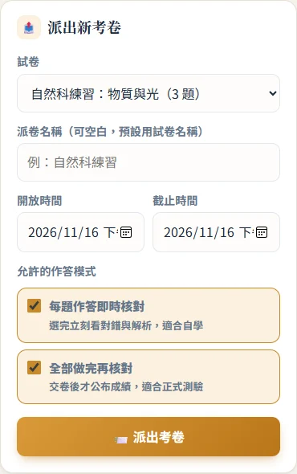

瀏覽器畫面
HTML、CSS、JavaScript 提供學生作答與教師派卷兩個入口。教師端用本站根網址及六碼派卷代碼組出學生網址，當場編碼成 QR Code，可直接下載 SVG。
查看前端來源 ↗Cloudflare Workers ＋ D1
匯入四選一題庫，用教師後台設定測驗時間和作答模式。學生掃碼進入，交卷後即可從後台查看成績、投影檢討或匯出 CSV。

本機試跑
從 GitHub 下載原始碼或複製 Repo。安裝 Node.js 22 以上版本，在專案根目錄執行以下命令。
npm ci
npm run db:init把 .dev.vars.example 複製為 .dev.vars。將 TEACHER_PASSWORD 與 AGENT_API_KEY 換成各自的值，然後啟動本機服務。
npm run dev另開終端機，設定 QUIZ_AGENT_KEY，值與剛才的 AGENT_API_KEY 相同。第一行只驗證格式，第二行只建試卷。要換題目，可從 範例 JSON 開始，每題填題幹、四個選項、正確答案與解析。
npm run quiz:import -- examples/quiz.json --check
npm run quiz:import -- examples/quiz.json --no-assign開啟本機教師頁 http://127.0.0.1:8787/quiz/teacher/，用教師密碼登入。選卷、確認時間及作答模式後，按「派出考卷」。用同一台電腦開啟學生網址，填虛構代碼測試。交卷後，從清單進入「成績與檢討」。
上線部署
先登入並建立一個新的 D1 資料庫，把回傳的資料庫 ID 填到 wrangler.toml。你也可以更改 Worker 的 name，決定自己的站點名稱。
npx wrangler login
npx wrangler d1 create quiz-assignment初始化正式資料表後部署 Worker，再設定站點的兩個 Secret。測試用與正式用的值請分開管理。
npx wrangler d1 execute quiz-assignment --remote --file schema.sql
npm run deploy
npx wrangler secret put TEACHER_PASSWORD
npx wrangler secret put AGENT_API_KEY把 QUIZ_BASE_URL 設為 Wrangler 回傳的 HTTPS 根網址，將 QUIZ_AGENT_KEY 設為正式匯入金鑰，再用上面的匯入命令建卷。開啟自己站點的 /quiz/teacher/ 派卷，用手機掃 QR Code，確認能開卷、交卷並回傳成績。
手機掃碼前 本機的 127.0.0.1 只指向開啟網址的那台裝置。要從手機試掃，請使用手機可連線的正式 HTTPS 網址。
製作方式
HTML、CSS、JavaScript 提供學生作答與教師派卷兩個入口。教師端用本站根網址及六碼派卷代碼組出學生網址，當場編碼成 QR Code，可直接下載 SVG。
查看前端來源 ↗處理教師登入、題庫匯入、派卷時間、學生作答憑證與伺服器計分。全卷核對模式會等學生交卷才提供結果。
查看 API 實作 ↗將試卷、題目、派卷、作答及答案存為五張資料表。每一份派卷按班級代碼和座號區分作答，第一份交卷是正式成績。
查看資料表 ↗作答代號與成績儲存在部署者的 D1。續答使用同一瀏覽器保存的憑證。公開範例採虛構題庫，使用時請發指定代碼，避免要求學生輸入真實姓名。學生端沒有帳號驗身，適合課堂練習及低風險評量。